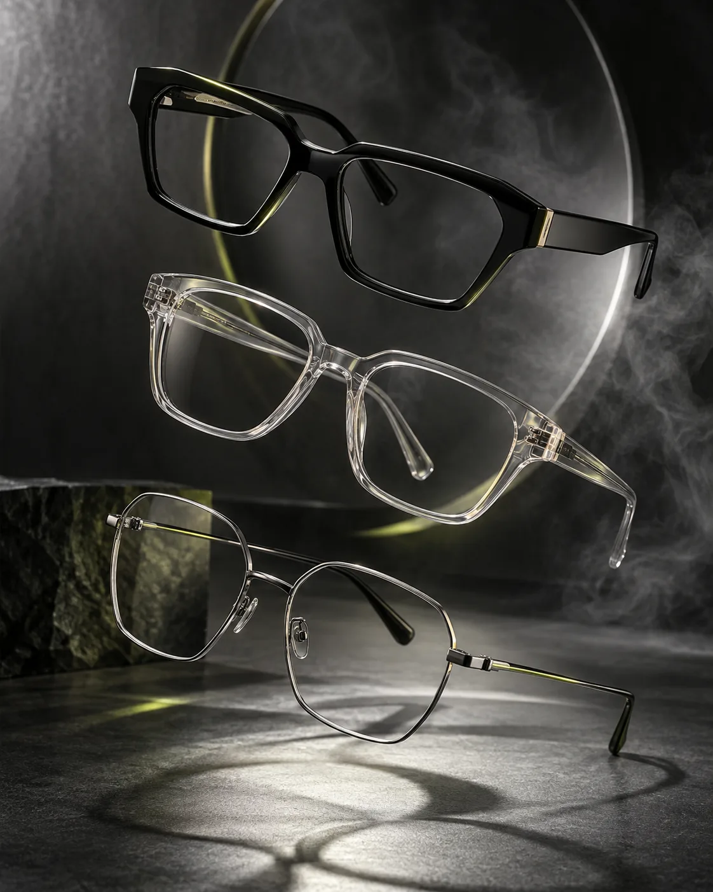
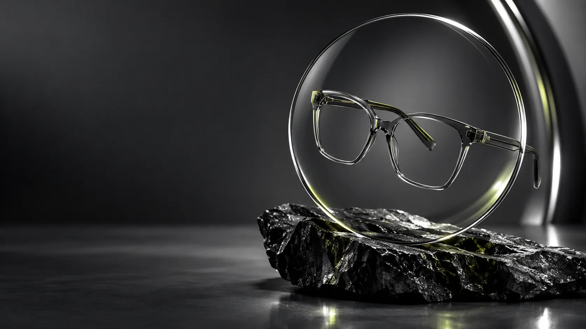

Linhas firmes
Marcante
Geometria definida para quem gosta de contraste no rosto.

Ótica em Messejana
Armações que acompanham seu rosto, seu ritmo e a forma como você quer ser visto.
Use as categorias como ponto de partida. Modelos, marcas e disponibilidade são confirmados pela equipe.

Geometria definida para quem gosta de contraste no rosto.
Presença suave, acabamento claro e leitura contemporânea.
Metal fino e desenho limpo para atravessar tendências.
Este guia fala de estilo, não substitui medidas, prova presencial nem orientação profissional.
Rua Manuel Castelo Branco, 490 A, loja 4
Messejana, Fortaleza, CE